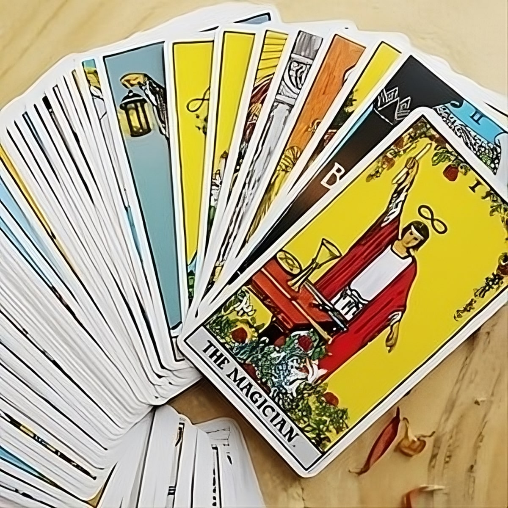

Pinky Nanda
Tarot reader
Greetings, I'm Tarot Pinky Nanda, and I'm delighted to welcome you into the captivating world of Tarot. Over the years, I've honed my skills and immersed myself in the profound principles, ethics, and rules of Tarot reading. With a sharp intuition and deep insights, I offer precise analyses and predictions that can instigate holistic changes in your life.
My mastery of Tarot allows me to unravel the rich symbolism within each card, providing you with profound insights. Through extensive research across various astrological systems, I've uncovered hidden gems that empower individuals to transform their lives.
I specialize in consultations covering a wide range of life aspects, including Love, Education, Marriage, Finance, Career, Business, Family, and Children. My goal is to guide you towards positive transformations using the wisdom of these sacred arts.
With years of experience and fluency in Hindi, English, and Punjabi, I'm here to assist you on your transformative journey. Feel free to reach out for more information, and let's embark on this enlightening path together.

ABOUT TAROT
The tarot is a powerful tool for self-discovery, reflection and interpretation can provide you valuable insights into your life and help you navigate the challenges and opportunities that come your way. Tarot card reading is a form of cartomany where we use tarot cards to insight into the past,present and future.
Like many forms of divination, tarot cards are a tool to help you tap into your own intuition and the wisdom of the universal energy that guides your life. Tarot which has origins in 14th century is a form of fortune-telling.
Its more like a mirror that reflects what is happening in ur life at the moment.Tarot is able to tap into hidden thoughts, feelings and truths and bring them to the surface so you can use that information to make decisions about life, love, emotions, health, career and much more...
powered by Typeform